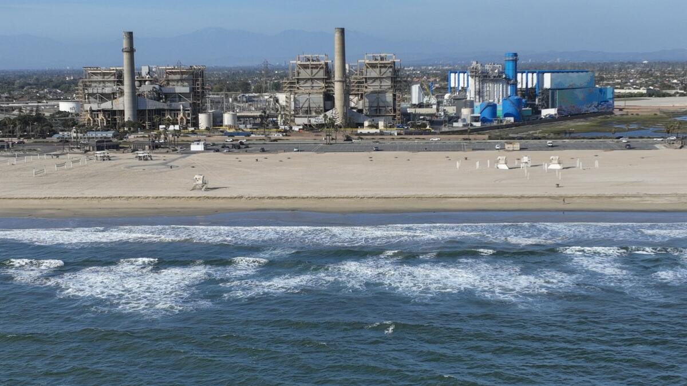
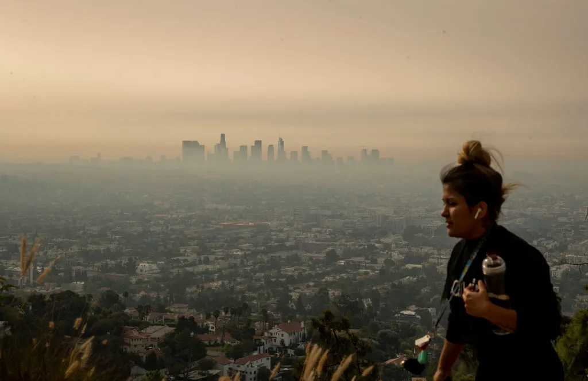
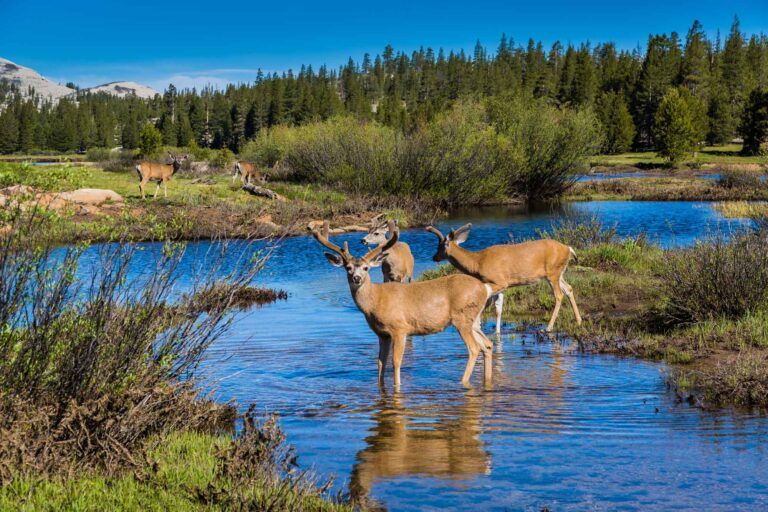

LOCAL METRICS
Visit Dashboard
All time
Total visits
—
Total visitors
—
Guests
—
OCC students
—
Perfect quiz (10/10)
—
Today
Today visits
—
Today visitors
—
Guests (today)
—
OCC students (today)
—
Local Environment Snapshot

Orange County operational facts + course concepts (water scarcity, pollution pathways, biodiversity, climate, and solutions).
COURSE CORE
Why water is a big deal
- Only 2.5% of Earth’s water is freshwater; most is locked in ice or groundwater, and surface water is ~1% of freshwater. [11]
- Watersheds matter: land use upstream determines what reaches rivers, estuaries, and beaches. [11]
- Wetlands provide “free services”: slow runoff, reduce flooding, recharge aquifers, and filter pollutants. [11]
COURSE CORE
Biodiversity = resilience
COURSE CORE
Climate adds pressure
Ocean, Harbors & Water Supply
140monitoring stations ·
101,051acre-ft recycled (2024)

Beaches/harbors monitoring + drought-resilient supply (advanced recycling + recharge) are the backbone of coastal health and water reliability.
CURRENT SITUATION
What we are doing well
Coastal monitoring & public notification
- Structured monitoring and notification: when bacteriological standards are exceeded, the public is notified, signs are posted, and monitoring can increase; the report describes use of Beach Mile Days. [1]
- Continuous response capacity: staff are on-call 24/7 for sewage or contamination incidents, with public information channels described in the report. [1]
Recycling & groundwater protection
RISKS
What the dangers are
- Sewage spills: wastewater overflows can threaten waterways and beaches; untreated sewage contains high levels of disease-causing bacteria and viruses. [1]
- Basin overdraft tracking: accumulated overdraft reported as 204,985 acre-feet (preliminary). [3]
- Drought + warming pressures can increase demand while reducing imported supply reliability (snowpack timing and totals are less predictable). [7] [8]
EDUCATION
How it works
Beach postings
- Weekly sampling is performed at monitoring stations by multiple public agencies. [1]
- Exceedances trigger postings and potentially increased monitoring; Beach Mile Days compare extent and duration. [1]
- Public updates are provided through the report’s described channels. [1]
Why recycling matters
NEXT STEPS
What we need to do next
- Maintain monitoring + rapid public notification to protect public health. [1]
- Reduce upstream spill risks and contamination inputs that trigger postings. [1]
- Expand drought-resilient supplies through recycling and recharge systems described in the annual report. [2]
- Use basin accounting to guide sustainability decisions and reduce long-term overdraft. [3]
- Reduce disposable plastics at the source to keep trash out of storm drains and the ocean. [11]


Flood Control & Beach Protection

Flood control reduces storm overflow risk; beach projects counter erosion; both interact with climate-driven extremes.
CURRENT SITUATION
What we are doing well
RISKS
What the dangers are
EDUCATION
Why capacity + sediment matter
NEXT STEPS
What to do next

Climate Context & Human Health
~200 mmsea level rise past century

Climate drivers change baselines (sea level, storms, drought). Health outcomes follow via heat, smoke, air pollution, and water quality.
PHYSICAL CHANGES
What is changing
- Sea level: described as ~200 mm (8 inches) over the past century at example stations; El Niño can elevate levels. [6]
- Global sea level rise is described as ~9.3 inches in the last 120 years, with additional rise projected by 2100. [13]
- Warming amplifies extremes: droughts, heavier rainfall, and wildfire conditions. [13]
HEALTH PATHWAYS
How people are impacted
MITIGATION
Reduce the drivers
ADAPTATION
Reduce the harms


Ecosystems, Wildlife & Cultural Stewardship
Biodiversityhabitats · forests · fire · corridors

Healthy ecosystems need space (habitat), connection (corridors), and disturbance-aware management (fire ecology + cultural burning).
BIODIVERSITY
What biodiversity means + why it matters
- Biodiversity exists at ecosystem, species, and genetic levels. [12]
- It supports ecosystem services: water purification, climate moderation, nutrient cycling, pollination, and pest control. [12]
- Main drivers of loss include habitat alteration/fragmentation, invasive species, pollution, overharvesting, and climate change. [12]
FORESTS + FIRE
Forests store carbon; fire is part of many ecosystems
- Forests cover ~31% of Earth’s surface and store large amounts of carbon; protecting forests limits warming. [15]
- Many forest/chaparral systems are adapted to fire; long-term fire suppression increases fuel buildup and can worsen catastrophic fires. [15]
- Controlled/prescribed (and cultural) burns reduce fuel and can improve long-term outcomes compared with only reactive suppression. [15]
HABITAT + CORRIDORS
Fragmentation is a local issue
INVASIVES + POLLUTION
Prevent introductions; cut pollution at the source


What To Do & Who Does It
5 R'srefuse · reduce · reuse · recycle · rot
Actions that matter: reduce pollution inputs, reduce waste, conserve water/energy, and support local agencies that do monitoring and infrastructure.
HOUSEHOLD ACTIONS
The 5 R’s + why “reduce” wins
WATER
Conserve + protect water quality
FOOD + SOIL
Protect soil; reduce chemical impacts
AIR + CLIMATE
Cleaner energy, cleaner air
LOCAL AGENCIES
Who does what (Orange County)
- Orange County Health Care Agency (Environmental Health Water Quality Team): coastal monitoring, postings, and public notification. [1]
- Orange County Water District + Orange County Sanitation District: GWRS recycling and groundwater reliability. [2]
- Orange County Public Works: flood control projects, channel upgrades, beach sand placement, and debris removal. [4]
HOW TO USE
Verification
- Use the Sources section to verify each numbered claim.
- OC operational facts are in the OC reports; course concepts come from lecture PDFs.
Quick Quiz
Enter your name, take 10 random questions, then submit to see your score.
Sources
Thank you to Professor Lisa Snyder, Department of Environmental Science & Ecology at Orange Coast College, and Orange County environmental agencies and organizations for providing the source materials used on this site.
- Orange County Ocean, Harbor and Bay Water Quality Report 2023–2024
- 2024 Groundwater Replenishment System Annual Report
- Orange County Water District Water Resources Summary (December 2025)
- Orange County Public Works State of the Department 2022–2024 (channel improvements)
- Orange County Public Works State of the Department 2022–2024 (sand placement; debris removal)
- Indicators of Climate Change in California (2022) – Physical Systems (sea level rise context)
- Indicators of Climate Change in California (2022) – Physical Systems (snow-water content context)
- Indicators of Climate Change in California (2022) – Physical Systems (snowmelt timing context)
- Indicators of Climate Change in California (2022) – Human Health section
- Indicators of Climate Change in California (2022) – Tribal section (example narrative)
- Course lecture PDF: Ch. 12 Freshwater, Oceans, & Coasts
- Course lecture PDF: Ch. 8 Biodiversity
- Course lecture PDF: Ch. 14 Global Climate Change
- Course lecture PDF: Ch. 13 Atmospheric Science & Air Pollution
- Course lecture PDF: Ch. 9 Forests & Forest Management
- Course lecture PDF: Ch. 17 Managing Our Waste & Sustainability Solutions
- Course lecture PDF: Ch. 7 Soil, Agriculture, & the Future of Food